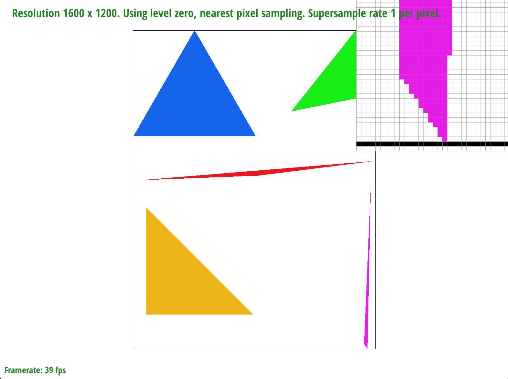

Author: Zineng Tang
In this homework, I implemented a series of graphics programming tasks aimed at understanding and applying fundamental computer graphics concepts, including rasterization, antialiasing, texture mapping, and transformations. I started by drawing single-color triangles, optimizing the process to improve performance beyond a brute-force approach by focusing on subpixel accuracy and edge function optimizations. This laid the groundwork for implementing antialiasing through supersampling, where I manipulated sample rates to significantly enhance image quality by reducing aliasing effects. The most interesting insights came from applying these techniques in practical scenarios, such as transforming a simple robot figure and experimenting with barycentric coordinates to create visually appealing gradients and patterns.
The function operates by first determining the bounding box of the triangle, which is the smallest rectangle that completely contains the triangle. This is accomplished by finding the minimum and maximum X and Y coordinates from the triangle's three vertices (x0, y0), (x1, y1), and (x2, y2).
Once the bounding box is established, the function iterates over each pixel within this box. For each pixel, it calculates a center point (cx, cy) by adding 0.5 to the X and Y coordinates, effectively moving the point to the pixel's center. The function then checks if this center point lies within the triangle using the point_in_triangle method. This method evaluates whether the point is inside the triangle based on barycentric coordinates. If so, the pixel at the current (x, y) coordinate is filled with the specified color.
The provided algorithm improves upon the brute-force approach by potentially incorporating a higher precision check due to the sample rate adjustment. This doesn't inherently reduce the number of checks (as it still iterates over every sample within the bounding box), but it increases the quality of the rasterization with a more precise representation of the triangle's edges. The subpixel accuracy introduced by adjusting coordinates with the sample rate and the offset before checking if a point is inside the triangle allows for a more nuanced fill. This can reduce aliasing artifacts and produce smoother edges compared to a basic brute-force method that only considers whole pixels.
The overall latency decreased from 0.01373ms to 0.00503ms on average.
I did the following:
| Test 3 | Test 4 | Test 5 | Test 6 | |
|---|---|---|---|---|
| Original | 21.0935 ms | 1.54458 ms | 4.57825 ms | 2.55963 ms |
| New | 8.4075 ms | 0.52125 ms | 1.43129 ms | 0.844917 ms |
The RasterizerImp constructor sets up the rasterizer with a defined sample rate, determining the number of samples per pixel by adjusting the sample buffer size to accommodate multiple samples per pixel, based on the product of width, height, and the square of the sample rate.
The fill_pixel function is tailored for supersampling, updating the supersampled buffer with a specified color, bypassing direct modifications to the final framebuffer.
Rasterization methods are designed to operate within the supersampled buffer. Specifically, for triangles, the process involves scaling coordinates by the sample rate and evaluating if each supersampled point falls inside the triangle, using either barycentric coordinates or edge functions for determination.
Antialiasing of triangles through supersampling involves evaluating supersampled points within the triangle's area, leading to smoother edges by minimizing aliasing effects.
Finally, the resolve_to_framebuffer function merges the supersampled data back to the final image by averaging the colors of supersamples for each pixel, enhancing edge smoothness and reducing aliasing, thus finalizing the rendering process with improved visual quality.
Different Sample rates. We can see from the overview that sharp jagged edges are smoothed out as the sample rate increases. As we zoom in, we can see that the supersampling enables color averaging at a higher sample rate to make the transition between pixels more continuous and thus making it smoother by looking from afar.
I changed its translation parameter to (90, -70) and added rotation to the left arm and right arm respectively (35 and -35). This will make the robot look like it is waving its hands.
In a triangle, where each corner (vertex) of the triangle is a planet (with equal weight) and has gravitational force of its own. In this case, they are yellow, red, and green. In this triangle, the position of any object (a point) can be described by how it is influenced by these gravitational forces. For example, the closer it is to yellow and green, the less red color it blends in and may end up showing a mixture of yellow and green. Barycentric coordinates tell us how much each vertex of the triangle contributes to the point's location by its nonlinear proportion of distance to the target location.
The goal of texture sampling is to create realistic or desired visual effects by accurately mapping the texture onto the model's surface. Two common methods of pixel sampling are nearest neighbor sampling and bilinear sampling.
Nearest neighbor sampling is when mapping a texture onto a surface, each point on the surface is colored with the color of the closest corresponding pixel (or texel) in the texture image.
Bilinear sampling is a more sophisticated method that addresses the blockiness of nearest neighbor sampling. It takes the closest four texels to the point being textured and calculates the color by interpolating between these texels. This interpolation considers the distance of each of these four texels to the point, producing a smoother and more blended result.
Texture Sampling Difference
We can see that at sample rate 1 and 16, bilinear sampling results in smoother rendering of texture. The effect is more obvious when the sample rate is 1, which might be because of the anti-aliasing effect of increasing sample rate itself. We can see that this particular pattern has a more spiral texture which might result in less rectilinear and jagged texture and is harder to render. By using bilinear sampling, the jagged texture can be better smoothed out.
Calculate the Mipmap Level: Determine the most suitable mipmap level based on the surface area being textured and its distance from the camera. This can be done using derivatives of texture coordinates (UVs) to estimate how much texture space covers screen space and choose a LOD that best matches this coverage.
Sample the Texture: Once the appropriate mipmap level is determined, sample the texture from this level using your chosen sampling method (e.g., nearest, bilinear).
L_ZERO: This method always samples from the base level (the highest resolution texture) of the mipmaps. It's simple and doesn't involve any calculations.
L_NEAREST: This method involves calculating the nearest mipmap level based on the texture's appearance on the screen. It rounds the calculated LOD to the nearest whole number to select the mipmap level.
L_LINEAR: Also known as trilinear filtering when combined with bilinear sampling, this method calculates the LOD as a continuous number. It then samples from the two nearest mipmap levels and linearly interpolates between these samples based on the fractional part of the LOD.
Nearest neighbor sampling is faster due to its simplicity. Bilinear filtering is slower because it involves more computation. Both methods use a similar amount of texture memory, but bilinear filtering requires additional memory for intermediate calculations. Bilinear filtering offers a basic form of antialiasing by smoothing out textures, while nearest neighbor does not contribute to antialiasing.
Using no mipmapping is fastest but does not have the best quality. Nearest mipmap level sampling balances speed and quality. Linear mipmap level sampling is the slowest due to the additional interpolation step. Mipmapping requires additional memory to store the mipmap levels but it significantly reduces aliasing and can improve performance by using lower-resolution textures when possible. Linear mipmap level sampling provides the best antialiasing among the level sampling methods by smoothing transitions between mipmap levels.
Increasing the number of samples per pixel directly impacts rendering speed, as more pixel values need to be calculated and blended. Higher samples counts require more memory to store sample data. This can be particularly demanding for high-resolution textures or complex scenes. Higher samples per pixel provide better antialiasing capabilities.
As shown in the figure, we can see that adding in more levels and bilinear texture sampling best help antialiasing issue. But adding linear level alone can still help the texture quality.